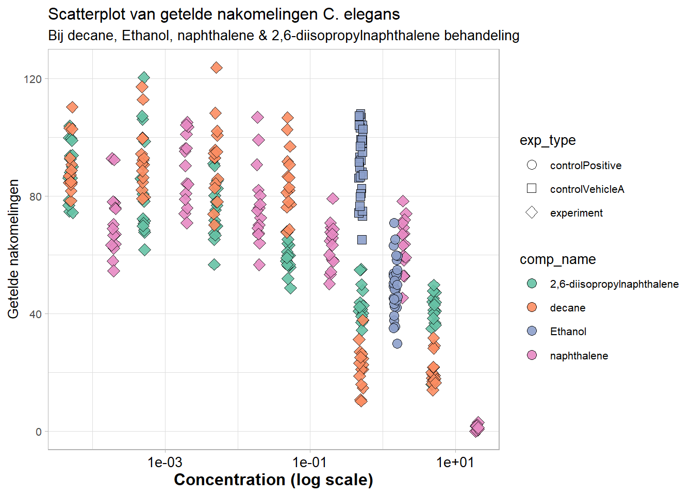
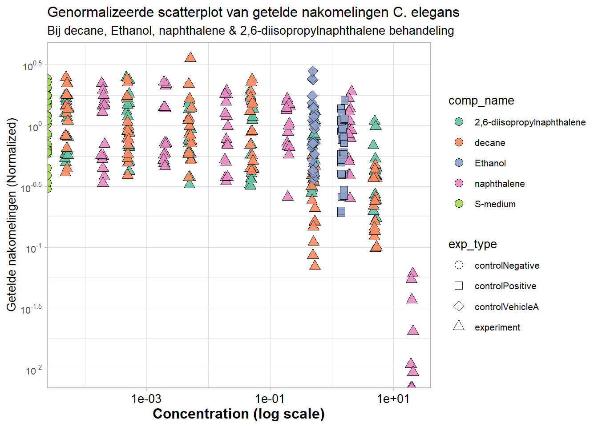

Opdracht 4 Reproducible Science
Een data analyse van een ander reproduceren
De data is afkomstig van het HU lectoraat Innovative Testing in Life Sciences & Chemistry. De data is verkregen door C. elegans bloot te stellen aan verschillende doses van verschillende chemicaliën.
# Laad de nodige library's
library(tidyverse)
library(readxl)
# Lees de data in met het readxl package
excel_data <- read_excel("ruwe_data/CE.LIQ.FLOW.062_Tidydata.xlsx")
# Vervang , met . (er is een data entry die een , gebruikt) zodat er geen NA onstaat
excel_data$compConcentration <- str_replace_all(excel_data$compConcentration, ",", ".")
# Pas het data type van compConcentration aan van chr naar dbl.
excel_data <- excel_data %>% mutate(compConcentration = as.double(compConcentration))
# Maak een samenvatting variable waar alleen de nodige kolommen in staan.
excel_data_sum <- excel_data %>% reframe(
raw_data=RawData,
comp_name=compName,
comp_conc=compConcentration,
exp_type=expType
)
# Maak een scatterplot van de samenvatting variabele
excel_data_sum %>% filter(comp_conc>0) %>% # Filter oneindige waardes weg
ggplot(aes(x = comp_conc, y = raw_data)) + # Set x & y as
geom_point(
aes(shape = exp_type, fill = comp_name), # Set shape en fill volgens opdracht
position = position_jitter(width = 0.03, height = 0.4, seed = 123), # Set minimale jitter (zichtbaarheid)
colour = "black", # outline kleur van de points
size = 3, # grootte van de points
alpha = 0.9 # Transparency van de points
) +
scale_x_log10() + # Zet x as op een log10 schaal
scale_shape_manual(values = c(21, 22, 23, 24, 25)) + # Kies shapes die gebriukt worden
scale_fill_brewer(palette = "Set2") + # Kies kleuren die gebruikt worden
guides(
fill = guide_legend(override.aes = list(shape = 21, colour = "black"))) + # Set legend voor zichtbaare kleur
labs(
title = "Scatterplot van getelde nakomelingen C. elegans", # set titel
subtitle = "Bij decane, Ethanol, naphthalene & 2,6-diisopropylnaphthalene behandeling", # subtitle
x = "Concentration (log scale)", # x as caption
y = "Getelde nakomelingen" # y as caption
) +
theme_light(base_size = 10) + # grootte aanpassen + thema
theme(
axis.text.x = element_text(size = 10, colour = "black"), # aanpassen x as text
axis.title.x = element_text(size = 12, face = "bold") # aanpassen x as title
) 
Figuur 4.1: Scatterplot van getelde C. elegans afkomstelingen bij verschillende behandelingen. Behandeld met Decane, Ethanol, naphthalene & 2,6-diisopropylnaphthalene. Er is een toxisch effect zichtbaar bij naphthalene, decane & 2,6-diisopropylnaphthalene, waar er allemaal minder nakomstelingen aanwezig zijn bij hogere concentraties.# Neem het gemiddelde van de negatieve controle en stop deze in variabele
mean_neg <- excel_data_sum %>%
filter(exp_type == "controlNegative") %>%
pull(raw_data) %>%
mean(na.rm = TRUE)
# Maak een nieuwe kolom aan in de samenvatting variabele met genormaliseerde waardes voor ruwe data
excel_data_sum$count_norm <- excel_data_sum$raw_data / mean_neg
# Maak een scatterplot met de genormalizeerde data
excel_data_sum %>%
ggplot(aes(x = comp_conc, y = count_norm)) + # Set x & y as
geom_point(
aes(shape = exp_type, fill = comp_name), # Set shape en fill volgens opdracht
position = position_jitter(width = 0.03, height = 0.4, seed = 123), # Set minimale jitter (zichtbaarheid)
colour = "black", # outline kleur van de points
size = 3, # grootte van de points
alpha = 0.9 # Transparency van de points
) +
scale_x_log10() + # Zet x as op een log10 schaal
scale_y_log10( # log scale op y voor normalized counts
breaks = scales::trans_breaks("log10", function(x) 10^x, n = 5),
labels = scales::trans_format("log10", scales::math_format(10^.x))) +
scale_shape_manual(values = c(21, 22, 23, 24, 25)) + # Kies shapes die gebriukt worden
scale_fill_brewer(palette = "Set2") + # Kies kleuren die gebruikt worden
guides(
fill = guide_legend(override.aes = list(shape = 21, colour = "black"))) + # Set legend voor zichtbaare kleur
labs(
title = "Genormalizeerde scatterplot van getelde nakomelingen C. elegans", # set titel
subtitle = "Bij decane, Ethanol, naphthalene & 2,6-diisopropylnaphthalene behandeling", # subtitle
x = "Concentration (log scale)", # x as caption
y = "Getelde nakomelingen (Normalized)" # y as caption
) +
theme_light(base_size = 10) + # grootte aanpassen + thema
theme(
axis.text.x = element_text(size = 10, colour = "black"), # aanpassen x as text
axis.title.x = element_text(size = 12, face = "bold") # aanpassen x as title
) 
Figuur 4.2: Genormaliseerd scatterplot voor getelde C. elegans nakomelingen bij verschillende behandelingen. Behandeld met Decane, Ethanol, naphthalene & 2,6-diisopropylnaphthalene. De genormaliseerde data laat zien dat in vergelijking met geen behandeling er minder C. elegans nakomelingen geteld worden bij hogere concentraties van decane, naphthalene & 2,6-diisopropylnapthalene.Uitleg analyse
De negatieve controle bestaat uit alleen S-medium zonder toegevoegde chemicaliën.
Negatieve controles zijn belangrijk voor het normaliseren van data. Zonder negatieve controle kan een effect groot of klein lijken, terwijl er eigenlijk niks of juist erg veel veranderd, bijvoorbeeld:
Je test het effect van kamille op de gemiddelde 1km hardloop tijd. Je data laat zien dat de kamille thee drinkende hardlopers gemiddeld 6:30 minuten over 1 km hardlopen doen.
Je bent echter vergeten de gemiddelde tijd te meten van mensen die geen kamille thee drinken voor het hardlopen, je weet dus nog niet of het drinken hiervan een effect heeft!
De positieve controle bestaat uit S-medium + Ethanol
Positieve controles zijn belangrijk om te laten zien of je experiment werkt, en meetbaar resultaat kan laten zien. Om dit te illustreren gebruiken we het kamille thee voorbeeld:
Je voert je kamille thee experiment nog een keer uit. Deze keer met een negatieve controle van hardlopers die geen kamille thee hebben gedronken, en je experimentele groep van hardlopers die wel kamille thee hebben gedronken.
De gemiddelde tijd van je negatieve controle en experimentele groep is hetzelfde, het is echter mogelijk dat je experimentele opzet niet goed werkt. Je hebt dus iets nodig waarvan je zeker weet dat het de snelheid van de hardlopers gaat beinvloeden, zoals caffeïne.
De vehicle controle bestaat uit S-medium + Ethanol
De vehicle controle laat zien of je oplossingsmiddel invloed heeft op je resultaat, omdat dit anders onbekend invloed kan hebben. Laten we nog 1 keer ons voorbeeld gebruiken:
Je hebt deze keer een nieuwe experimentele opzet bedacht waarvan je zeker weet dat er niks fout kan gaan. Je hebt 3 groepen hardlopers samengesteld:
De negatieve controle van hardlopers die niks op hebben.
De positieve controle van hardlopers die koffie hebben gedronken
Je experimentele groep van hardlopers die kamille thee hebben gedronken.
Je data laat een gemiddelde tijd van 5:40 min zien voor je positieve controle, een tijd van 6:30 voor je experimentele groep, en een tijd van 8 minuten voor je negatieve controle. Voordat je iedereen gaat vertellen over de positieve effecten van kamille thee is het goed om je te bedenken dat je nog 1 controle mist.
De kamille thee is namenlijk grotendeels water, en het is mogelijk dat de positieve effecten hierdoor komen, en niet door de kamille die er in is opgelost.
Je herhaalt het experiment dus nog een laatste keer, deze keer vergeet je niet om een vehicle controle mee te nemen van hardlopers die voor het rennen water drinken. Je data laat weer een snellere tijd zien bij de positieve controle & experimentele groep in vergelijking met je negatieve controle. Je vehicle controle laat echter ook een snellere tijd zien. Je hebt dus niet bewezen dat kamille thee je sneller laat hardlopen, want het water waar het in is opgelost laat hetzelfde effect zien!
Waarom normaliseren?
De data normaliseren gebaseerd op de negatieve controle zorgt ervoor dat de y-as de verandering laat zien, in plaats van absolute eenheden. De y-as wordt dus relatief aan de negatieve controle. Dit is erg handig voor de interpretatie, omdat het in een oogopslag laat zien of je stof een stimulerend of remmend effect heeft.
Stappenplan voor vervolgonderzoek
- Install en load packages
Denk aan drc, tidyverse. - Voeg data toe Zorg ervoor dat data juiste kolommen bevat (dose, response) Moet bevatten: response, compConcentration, compName, expType Filter mogelijk op 1 expType of 1 compound voor specifieke analyse
- Plot ruwe data Gebruik plot om te kijken naar data (bijvoorbeeld klassieke s curve zien)
- Vindt log logistisch model Bijvoorbeeld LL.4 (4 parameter logistisch model(s-curve)) model <- drm(response ~ dose, data = data, fct = LL.4())
- Check model summary summary(model)
- Bereken ED50 ED(model, c(10, 50, 90))
- Plot curve plot(model,main = “Fitted Dose-Response Curve”,xlab = “Dose”,ylab = “Response”)
Een artikel beoordelen op reproduceerbaarheid
Onderdeel 1
Reference to article:
Kontowicz, E., Moreno-Madriñan, M., Ragland, D., & Beauvais, W. (2023). A stochastic compartmental model to simulate intra- and inter-species influenza transmission in an indoor swine farm. PLoS ONE, 18(5), e0278495. https://doi.org/10.1371/journal.pone.0278495
Doel van onderzoek:
Het ontwikkelen en toepassen van een stochastisch compartimentenmodel om de verspreiding van influenza te simuleren binnen varkens en tussen varkens en mensen (zoals boerderijmedewerkers) in een indoor varkenshouderij, en om de effectiviteit van verschillende controlemaatregelen te evalueren.
Samenvatting:
De studie gebruikte een stochastisch SEIR-model om de verspreiding van influenza tussen varkens en werknemers op een varkensbedrijf te simuleren, inclusief verschillende interventies zoals vaccinatie, isolatie en beschermingsmaatregelen.
De resultaten tonen dat influenza zich snel verspreidt binnen varkensgroepen en ook kan worden overgedragen op mensen. Vaccinatie alleen is niet voldoende, maar een combinatie van maatregelen (vooral isolatie van zieke dieren en bescherming van werknemers) vermindert de verspreiding aanzienlijk.
Onderdeel 2
| Criteria | Definition | Response |
|---|---|---|
| Study Purpose | A brief statement, usually in the introduction, explaining why the study was conducted (study objective). | Yes |
| Data Availability Statement | A clearly labeled section describing whether and how the study’s data can be accessed. | Yes |
| Data Location | Information indicating where the study’s raw or processed data can be obtained. | https://github.com/ekontowicz/Compartmental-model-to-simulate-interspecies-influenza-transmission-in-an-indoor-hog-grower-unit. |
| Study Location | A statement specifying the geographic location where the research was conducted or where the data originated. | Yes; typical U.S. indoor hog-growing unit |
| Author Review | An evaluation of how professional and appropriate the author’s provided contact information is. | Professional |
| Ethics Statement | A statement addressing ethical considerations, including the handling or presence of sensitive or protected data. | No |
| Funding Statement | A disclosure indicating whether the research received funding and from which sources. | Yes |
| Code Availability | A statement confirming that the authors have shared the most up-to-date code used for analysis in the study. | Yes |
Onderdeel 3
De ruwe data van het experiment blijkt niet beschikbaar te zijn gemaakt als file, alhoewel dit wel wordt beweerd in het artikel. Er zijn constanten aanwezig in de scripts, waarvan wordt verwacht dat het de ruwe data is. Omdat ik nu al 20 minuten bezig ben met het vinden van de ruwe data kan ik met gemak zeggen dat de duidelijkheid van dit onderzoek ergens tussen een 1 en een 1 ligt.
Omdat er geen data aanwezig is (Wordt wel beweerd in het artikel) had ik aan de lieftalige ChatGPT gevraagd om wat data te simuleren die bij de code en grafiek past. Ik realiseerde me tegelijkertijd ook dat dit natuurlijk niks zegt over de reproduceerbaarheid van de data. Ik kan met zekerheid zeggen dat het artikel dat ik heb gekozen niet reproduceerbaar is, tot het punt dat ik het niet eens kan proberen. Ik heb daarom uiteindelijk gekozen om opdracht 4b 3 met een ander artikel uit te voeren (Ik heb de tijd niet om heel 4b opnieuw te doen) bedankt voor jullie begrip.
Het artikel gebruikt voor 4b.3:
nieuw_artikel <- tibble(
'Naam artikel' = "Estimating the basic reproduction number at the beginning of an outbreak",
'Link artikel' = "@EstimatingBasicReproduction",
'Link github' = "https://github.com/hannajankowski/R0_estimators_data"
)
knitr::kable(nieuw_artikel)| Naam artikel | Link artikel | Link github |
|---|---|---|
| Estimating the basic reproduction number at the beginning of an outbreak | “Estimating the Basic Reproduction Number at the Beginning of an Outbreak PLOS One” (n.d.) | https://github.com/hannajankowski/R0_estimators_data |
Wat doet de code?
De code simuleert epidemieën via compartimentele modellen (SIR, SEIR, SEAIR) genereert figuren (boxplots, tijdreeksen) voor het artikel, past toe op echte COVID-19-data uit Canada. De leesbaarheid van de code krijgt een 2/5, nauwelijks commentaar en uitleg aanwezig, er is geen README die uitlegd welke volgorde de scripts moeten runnen. Folders hebben spaties, structuur is onduidelijk etc.
Samenvatting
Aanpassingen gemaakt om errors te fixen:
| error | oplossing |
|---|---|
| Kan R functies niet vinden | Verplaatsen R functies naar main directory |
| Kan data niet vinden | Verplaatsen data naar main directory |
| WP functie is niet overal in script gelijk | Verander om te matchen in script |
| Object Rhat not found | N.V.T. |
Verder is het script zo enorm traag dat 1 run 4-8 uur duurt (blijkt)! For(i in 1:1000) is een van de oorzaken, aangepast naar for(i in 1:10).
In conclusie is het reproduceren van de data NIET gelukt, maar ik heb het zeker geprobeerd! Dit lijkt misschien weinig maar ik ben uren bezig geweest, ik geef deze data een 1 op reproduceerbaarheid. Paden die niet kloppen, errors in de code het klopt allemaal niet.